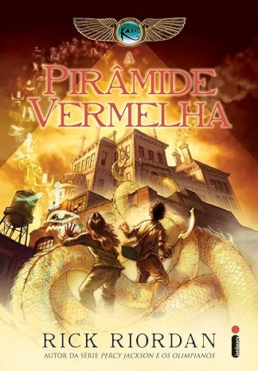

Até que na noite de Natal, em uma visita ao British Museum, o pai faz uma estranha promessa: tudo voltará a ser como antes. Mas seu plano dá errado, e os irmãos acabam assistindo ao momento em que um personagem misterioso desaparece com o egiptólogo e provoca uma explosão magnífica. Para salvar o pai, os irmãos embarcam em uma perigosa jornada, na qual descobrem que os deuses do Egito Antigo foram despertados e algo terrível está para acontecer - e que tudo isso está relacionado com uma ligação ancestral entre os Kane e a Casa da Vida, ordem secreta que existe desde a época dos faraós. Primeiro volume da série As crônicas dos Kane, A pirâmide vermelha leva aos leitores a aventura, o mistério e o irresistível humor já característicos dos livros de Rick Riordan, autor da bem-sucedida série Percy Jackson e os olimpianos. Os capítulos narrados ora por Carter, ora por Sadie, dão à história o tom ao mesmo tempo engraçado e comovente da rivalidade e das provocações entre os irmãos, que mal se conhecem no início da saga, mas, quem sabe, ainda serão grandes companheiros.
